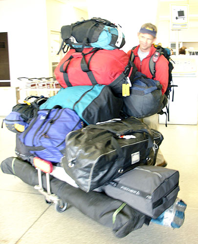
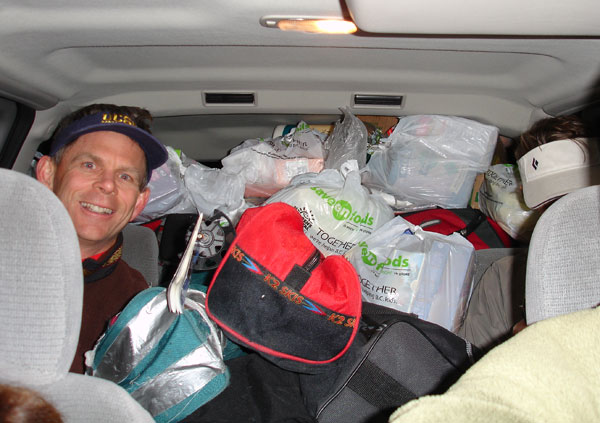
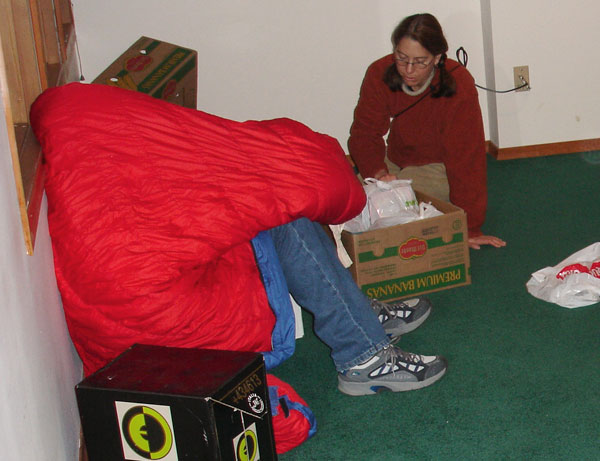
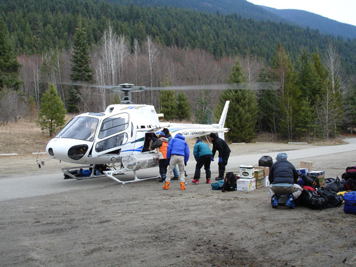
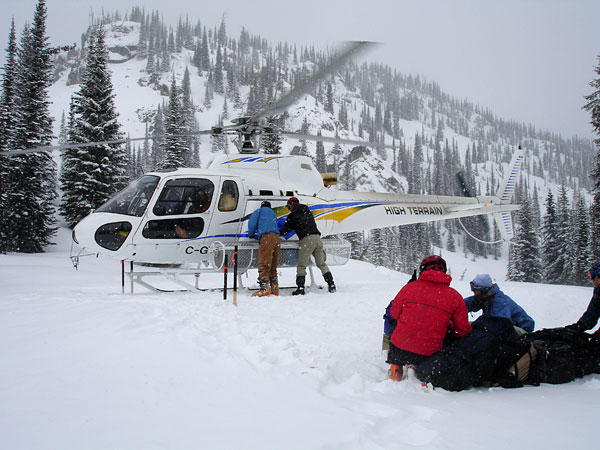
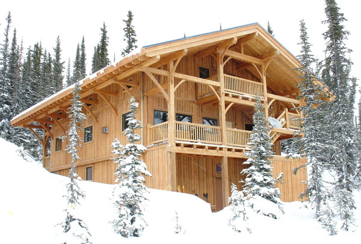
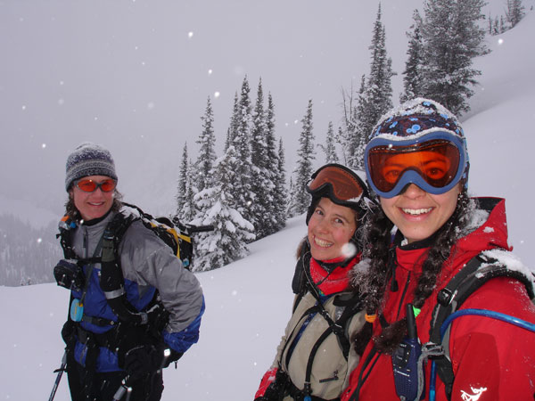
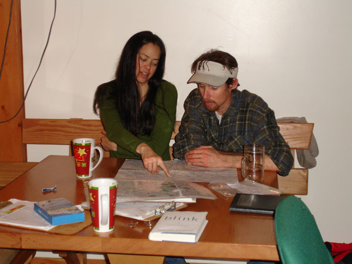
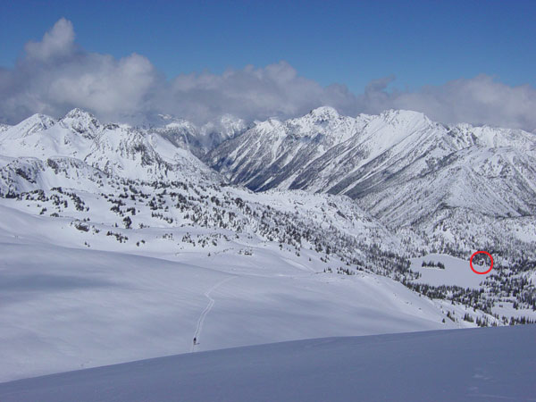

|
Going new places and trying new things is good.
That's how we ended up at the Kokanee Glacier Cabin in British Columbia,
north of Nelson. It was a lot of planning, organizing and debating
over wether we should hire a cook or not, but we pulled it off. (without
a cook, or guide for that matter).
Folks on their way out of the cabin told us that
the conditions were the worst they had seen in twenty years. Lucky
for us, recent and constant snowing gave us wonderful powder skiing
every day. There was so much snowing going on, in fact, we ended
up stuck in the cabin for 2 extra days as we waited for the weather
to clear and a heli to pick us up.
The Avy conditions never dropped below considerable
danger, so we never were able to push big lines or tour up to the
glacier. However, we never had a shortage of excitement as whoomping
and class 2 avalanches accompanied us in many locations. With poor
visibility and fast snow, it was an excellent week to practice tree
skiing anyway.

We tried to squish a rental cart with our gear in Spokaine but it didn't work.

We still had pleanty of room in the rental van so we hit the liquor store and
filled it up the rest of the way.

Helmüt was really sick on the way up. Although he never came out of his
sleeping bag during the packing stage, he continually attempted to remain helpful.

Although you may feel strange walking around in ski boots without a drop of
snow to be seen anywhere, you feel validated when the heli arrives.

This is where we were dropped off in our own private Kokanee.

Here's the little shack where we roughed it for 9 days. We affectionately dubbed
it "the mothership".

Here's some hot chicks we found hiding in the trees above the cabin...
No, actually it's telechick, twig-a-licious, and powder princess, on skis finally.

Here the trip organizers have a gruelling debate over where to ski the next
day.

Our little cabin was always easy to find at the end of the day as it's next
to a big lake and has a big red circle around it.
Continue to Kokanee Cabin Page 2
|